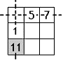
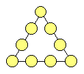
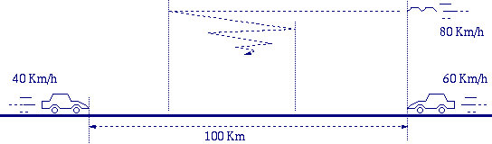
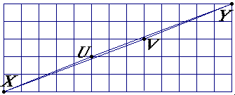
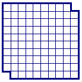
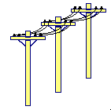
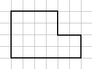

Puzzle Page 2… |
Fill in the empty cases of the square in
the picture, so that it becomes a "Magic Square.
Answer
Let's consider the first line (I) and first column (I) of the square (see fig. 1). As the sums of numbers on them are the same, and the first case of I line is common for them, then 1 + ? = 5 + 7. So,? = 11. The same way, considering the diagonal and the column, marked on fig. 2, we can find the last case of II column: it is 13. Now, from the II line and II column (fig. 3) we have that, the last case of II line should be 17. As the central case of square is common for two diagonals, then the extremities of "empty diagonal" we'll fill such that, the sum of them will be equal to 18. So the sum of all numbers of I and III columns is 1 + 11 + 7 + 17 + 18 = 54. Now, it is clear, that the sum of the numbers of each line, column or diagonal this "Magic Square" should be 54: 2 = 27. Using the last fact, we may easily fill remaining cases as in the fig. 4.
|
 |
|||
|
Fig. 1 |
Fig. 2 |
Fig. 3 |
Fig. 4 |
In the picture some toys (balls, cubs and pyramids) are suspended from bars, which are attached by cords. Two of the bars are in equilibrium, and the others are not. Put only one toy instead of ?, so that all the bars come to an equilibrium.
Answer
Let's number some bars and consider bar #2 (see the fig.). On the left side of this bar there are 1 bar, 2 cubes, 1 pyramid and the right side there are 1 bar, 1 cube, 1 ball and 1 pyramid. It means that the cube and the ball have the same weight. Now, let's consider bar #1. Now we observe, that the weight of the pyramid equals to the sum of the weights of a cube and a ball. Therefore by the above mentioned, the pyramid is in equilibrium with 2 balls. So, bar #5 will be in equilibrium if instead of ? we put a pyramid, and then we easily check that the bar #3, #4 also will be in equilibrium.
Cut the given cake in 8 equal parts by only three straight cuts by a knife.
Answer
Cut the top of cake by two straight cuts
at right angles to each other and passing through center of circle. Now cut the
cake horizontally at half the height of cake to get eight equal parts.
A wall-clock has numbers written in Roman Numerals such that ‘4’ is written as ‘IIII’ instead of ‘IV’. Suddenly, the wall falls on the ground and divides into four pieces such that each piece has the sum 20 on it if all the Roman Numerals are summed on the face. Find out how the clock is divided.
Answer
Total of all the numerals is 78 and we have to get 4*20=80 as the total. So, we require 2 more from somewhere. That we can get from IX only by separating the I and X. Now, divide the clock in four parts in any way to get the sum 20.
A long, long time ago, two
The two camel drivers, realizing that this could be come a rather lengthy
expedition, finally decided to consult the Wise Man of their village. Arrived
there, they explained him the situation, upon which the Wise Man raised his
cane and spoke three wise words. Relieved, the two camel drivers left his tent:
they were ready for the contest!
Which 3 wise words did the Wise Man speak?
Answer
Turn back and race.
The wise man told them to sit on the horses with their backs in front
(i.e. in direction of horse’s mouth) and then start the race.
A piece of paper of size 5 by 5 with two blunted corners should be divided into no more than two pieces (i.e. just one cut in total) and be rearranged into size 6 by 4 as shown in the figure below. How should the paper be cut?
![[paper 5x5 into 6x4]](./p2_files/image019.gif)
Answer
A boy
leaves home in the morning to go to school. At the moment he leaves the house
he looks at the clock in the mirror. The clock has no number indication and for
this reason the boy makes a mistake in interpreting the time (mirror-image).
Just assuming the clock must be out of order, the boy cycles to school, where
he arrives after twenty minutes. At that moment the clock at school shows a
time that is two and a half hours later than the time that the boy saw on the
clock at home. At what time did he reach school?
Answer
The difference between the real time and the time of the mirror image is
two hours and ten minutes (two and a half hours, minus the twenty minutes of
cycling). Therefore the original time on the clock at home that morning, could
only have been five minutes past seven:
The difference between these clocks is exactly 2 hours and ten minutes.
Conclusion: The boy reaches school at five minutes past seven plus twenty minutes of cycling, is twenty-five minutes past seven!...
The numbers 1, 2, 3, 4, 5, 6, 7, 8, and 9
must be put in the depicted triangle, in such a way that the sums of the
numbers on each side are equal. How should the numbers be arranged in the
triangle?

Answer
There are 18 solutions to this problem, when you leave out all rotations
and mirror solutions. They are all listed below:
1
5 7
9 6
2 4 8 3
1
5 8
9 3
4 2 6 7
1
6 9
8 4
2 5 7 3
1
6 9
8 2
4 3 5 7
1
6 7
8 3
5 2 4 9
2
4 7
9 3
5 1 6 8
2
5 6
9 4
3 1 8 7
2
6 9
7 1
5 3 4 8
2
6 9
8 1
3 4 5 7
3
2 6
9 4
7 1 5 8
3
4 9
8 1
5 2 6 7
3
4 7
8 2
6 1 5 9
3
5 9
6 1
7 2 4 8
3
5 8
7 1
6 2 4 9
4
2 7
9 3
5 1 8 6
4
3 9
8 1
5 2 7 6
7
2 4
6 3
8 1 5 9
7
3 6
5 1
8 2 4 9
Consider the figures below. Both triangular figures are build form the same four parts. The parts with the same color have exactly the same shape and size! They are only moved around, which resulted in an appearing area in the lower figure, marked with a question mark ('?').

From where comes the '?' hole?
Answer
Once again consider the figures below. Now note that the red and blue
triangle have a different slope! (Red triangle: 2/5 = 0.4, blue triangle 3/8 =
0.375) Which means that the two figures aren't real triangles...)
So, a little bit exaggerated in the figures below, the purple area is the
appearing area in the figure...
The numbers 1 up to 8 must be put in circles of the depicted net. However, numbers in neighboring circles must differ by more than 1. So, for example, circles connected to a circle with a 4 may not contain a 3 or a 5. How should the numbers be arranged in the circles of the net?
![[NumberNet]](./p2_files/image025.gif)
Answer
Here's the solution:
Nine dots are placed in three rows of each three dots, as shown in the picture. These nine dots must be connected by four straight, connected lines (i.e. without 'lifting up the pen' in between). How should the four lines be drawn?
![[Nine Dots]](./p2_files/image027.gif)
Answer
A carpet of size 10 by 10 meters should be placed in a room of size 12 by 9 meters. In the center of the room stands an aquarium of size 8 by 1 meters (see the figure below). The carpet should be cut into no more than two pieces (i.e. one cut in total). How should the carpet be cut?
![[carpet 10x10, room 9x12]](./p2_files/image029.gif)
Answer
In the middle of a round pool lays a beautiful water-lily. The water-lily doubles in size every day. After exactly 20 days the complete pool will be covered by the lily. After how many days will half of the pool be covered by the water-lily?
Answer
Because the water-lily doubles its size every day and the complete pool
is covered after 20 days, half of the pool will be covered one day before that,
after 19 days. After 19 days half of the pool will be covered by the
water-lily.
Consider a road with two cars, at a distance of 100 kilometers, driving towards each other. The left car drives at a speed of forty kilometers per hour and the right car at a speed of sixty kilometers per hour. A bird starts at the same location as the right car and flies at a speed of 80 kilometers per hour. When it reaches the left car it turns its direction, and when it reaches the right car it turns its direction again to the opposite, etcetera.
What is the total distance that the
bird has traveled at the moment that the two cars have reached each other?

Answer
If you have written down a full paper of mathematical formulas, you
haven't been thinking in the right direction. It is obvious that the two cars
meet each other after one hour. On that moment, the bird has flown for one
hour. The bird has flown 80 km/h · 1 h = 80 km.
A swimmer jumps from a bridge over a canal and swims 1 kilometer stream up. After that first kilometer, he passes a floating cork. He continues swimming for half an hour and then turns around and swims back to the bridge. The swimmer and the cork arrive at the bridge at the same time. The swimmer has been swimming with constant speed. How fast does the water in the canal flow?
Answer
If you have written down a full paper of mathematical formulas, you have
been thinking too difficultly...
It is obvious that the cork does not move relatively to the water
(i.e. has the same speed as the water). So if the swimmer is swimming away from
the cork for half an hour (up stream), it will take him another half hour to
swim back to the cork again (down stream, where he reaches the cork at the
moment it is passing the bridge). So in that one hour time, the cork has
floated from 1 kilometer up stream to the bridge. The water in the canal flows
at a speed of 1 km/h.
The area of the square shown below is 8 x
8 = 64. The square is cut in the four parts A, B, C, and D, which are
rearranged into the rectangle shown below. This rectangle has an area of 13 x 5
= 65.
![[8x8 Square]](./p2_files/image032.gif)
![[13x5 Rectangle]](./p2_files/image033.gif)
How can you explain the difference in area?
Answer
The picture of the rectangle is deceptive! The line XY shown in the
picture of the rectangle (see below) is not a line at all. The parts XU and VY
have a gradient of 2 / 5 = 0.4, and the parts XV and UY have a gradient of 3 /
8 = 0.375. So, in fact, XUYV is a parallelogram with an area of 1, not a line!
![[Solution for Square and Rectangle]](./p2_files/image034.gif)

A banana plantation is located next to a desert. The plantation owner has 3000 bananas that he wants to transport to the market by camel, across a 1000 kilometer stretch of desert. The owner has only one camel, which carries a maximum of 1000 bananas at any moment in time, and eats one banana every kilometer it travels. What is the largest number of bananas that can be delivered at the market?
Answer
533 1/3 bananas.
Explanation: Since there are 3000 bananas and the camel can carry at
most 1000 bananas, at least five trips are needed to carry away all bananas
from the plantation P (three trips away from the plantation and
two return trips):
|
|
===forth===> |
|
Point A in the above picture cannot be the market. This is
because the camel can never travel more than 500 kilometres into the desert if
it should return to the plantation (the camel eats a banana every kilometre it
travels!). So point A lies somewhere in the desert between the
plantation and the market. From point A to the next point, less
than five trips must be used to transport the bananas to that next point. We
arrive at the following global solution to the problem (P denotes
the plantation, M denotes the market):
|
|
===forth===> |
|
|
|
|
|
Note that section PA must be in the solution (as explained
above), but section AB or section BM might have a
length of 0. Let us now look at the costs of each part of the route. One
kilometre on section PA costs 5 bananas. One kilometre on section
AB costs 3 bananas. One kilometre on section BM
costs 1 banana. To save bananas, we should make sure that the length of PA
is less than the length of AB and that the length of AB
is less than the length of BM. Since PA is greater
than 0, we conclude that AB is greater than 0 and that BM
is greater than 0.
The camel can carry away at most 2000 bananas from point A.
This means the distance between P and A must be
chosen such that exactly 2000 bananas arrive in point A. When PA
would be chosen smaller, more than 2000 bananas would arrive in A,
but the surplus can't be transported further. When PA would be
chosen larger, we are losing more bananas to the camel than necessary. Now we
can calculate the length of PA: 3000-5*PA=2000, so PA=200
kilometres. Note that this distance is less than 500 kilometres, so the camel
can travel back from A to P.
The situation in point B is similar to that in point A.
The camel can't transport more than 1000 bananas from point B to
the market M. Therefore, the distance between A and
B must be chosen such that exactly 1000 bananas arrive in point B.
Now we can calculate the length of AB: 2000-3*AB=1000,
so AB=333 1/3. Note that this distance is less than 500
kilometres, so the camel can travel back from B to A.
It follows that BM=1000-200-333 1/3=466 2/3 kilometres. As a
result, the camel arrives at the market with 1000-466 2/3=533 1/3 bananas.
The full scenario looks as follows: first, the camel takes 1000 bananas
to point A. There it drops 600 bananas and returns with 200
bananas. Then the camel takes again 1000 bananas to point A.
Again, it drops 600 bananas and returns with 200 bananas. After this, the camel
takes the last 1000 bananas from the plantation to point A. From
point A, it leaves with 1000 bananas to point B. In
point B, it drops 333 1/3 bananas and returns with 333 1/3
bananas. Then it takes the second load of 1000 bananas from point A
to point B. Finally, it carries the 1000 bananas from point B
to the market, where it arrives with 533 1/3 bananas.
Consider 4 (dimensionless) flies, 2 males and 2 females. They are situated at the corners of 1 square meter. Every fly tries to reach the male/female fly in front of her/him. Their initial situation is visualized in the picture. Since the flies are flying towards another, they will meet each other at a certain time in the center of the square. What is the length of the path they have traveled at the moment they reach each other?
Answer
Because all flies constantly fly perpendicular to another fly, they all
travel the shortest distance to each other, which is 1 meter. (All flies make a
kind of spiral flight to the centre of the square, and during this flight, the
flies constantly form a square until they meet in the centre). The flies all
travel 1 meter.
Try to fill the total board (10x10-2)
with bricks of size 2 (and  ), so no
overlaps, no gaps, and no bricks crossing the borders.
), so no
overlaps, no gaps, and no bricks crossing the borders.

Question 1: Is this possible? (Proof!)
Answer
Imagine the board to be coloured like a chess-board. Each brick will
cover a white and a black square of the board, so the number of bricks equals
the number of white squares equals the number of black squares. But by removing
the two opposite corners of the chess-board (with an even numbers of rows and
columns), two squares of the same colour are removed, so there is an imbalance
of white and black squares. No, you can not fill the board.
Question 2: How many squares
are present in the picture of the board?
Answer
Here is an overview of the number of squares of each size, as they are
present in the figure:
9x
8x
7x
6x
5x5: 62 - 2 = 34
4x4: 72 - 2 = 47
3x3: 82 - 2 = 62
2x2: 92 - 2 = 79
1x1: 102 - 2 = 98
--------------- +
Total: 366 squares.
Here is a little problem from the
physical/electro-technical area. What is the replacement resistance of the
circuit below?

Hint: The solution is rather easy and lies in the range of [0..5].
Answer
The circuit can be redrawn as follows:
The voltage at both ends of the middle resistance is now equal and
therefore the circuit consists of two parallel parts, each consisting of two
serial resistances. The replacement resistance is 1/(1+1) + 1/(1+1) = 1
.
A cable, 16 meters in length, hangs between two pillars that are both 15 meters high. The ends of the cable are attached to the tops of the pillars. At its lowest point, the cable hangs 7 meters above the ground. How far are the two pillars apart?

Answer
Note that it is a kind of trick question: the pillars stand next to each
other. It means that the cable goes 8 meters straight down and 8 meters
straight up. The distance between the pillars is zero meters.
We have 12 coins and a balance. 11 Coins
are of the same weight, but one coin differs in weight. You may perform three
weightings to find out which coin has a different weight. Note that you don't
know whether the coin with different weight is heavier or lighter! How
should you do these three experiments to find it out?
![[6 coins and a balance]](./p2_files/image044.gif)
Answer
Unfortunately, this solution requires an extensive description...
Divide the 12 coins in three groups of four coins each: A, B and C. Then start
weighing group A against B. Now the following two situations are possible:
1.
1.
The A against B weighing
is equal:
This means that one of the coins in group C has a different weight. Now take
two of the coins in group C (C1 and C2) and weigh them against two coins of
group A (A1 and A2, of which you know they have a correct weight). Again, there
are two possible results:
a.
a.
C1 + C2 are as heavy as
A1 + A2:
This means that C3 or C4 is the coin with a different weight, now you can
determine which one it is by weighing for instance C3 against A1 (= a correct
coin).
b.
b.
C1 + C2 have different weight
than A1 + A2:
This means that C1 or C2 is the coin with a different weight, so now you can
determine which one it is by weighing for instance C1 against A1 (= a correct
coin).
2.
2.
A and B have different
weight:
Call the lightest group A and the heaviest group B. Now you know that the
remaining group C consists of all correct coins. Then do the following
weighing: take two coins from group A and two coins from group B (A1, A2, B1,
and B2) and weigh them against one coin from A, one coin from B and two coins
from C (A3, B3, C1, and C2). Now the following three situations are possible:
a.
a.
A1 + A2 + B1 + B2 are
as heavy as A3 + B3 + C1 + C2:
This means that A4 or B4 has a different weight, now you can determine which
one it is by weighing for instance A4 against C1 (= a correct coin).
b.
b.
A1 + A2 + B1 + B2 are
lighter than A3 + B3 + C1 + C2:
This means that either A1 or A2 are of different weight (lighter) or B3 is of
different weight (heavier). Now weigh A1 + B3 against C1 + C2 which can result
in the following situations:
i.
i.
A1 + B3 are as heavy as
C1 + C2:
Which means that A2 has a different weight.
ii.
ii.
A1 + B3 are lighter
than C1 + C2:
Which means that A1 has a different weight.
iii.
iii.
A1 + B3 are heavier
than C1 + C2:
Which means that B3 has a different weight.
c.
c.
A1 + A2 + B1 + B2 are
heavier than A3 + B3 + C1 + C2:
Similar explanation as in situation 2b...
EACH MAN DANCES WITH 3 WOMEN. EACH
WOMAN DANCES WITH 3 MEN. AMONG EACH PAIR OF MAN THEY HAVE EXACTLY TWO WOMEN IN
COMMON. FIND THE NUMBER OF MEN & WOMEN.
Answer
4 MEN 4 WOMEN.

Measure 10L water if you have a regular cylindrical vessel open from top containing 20L water, if you have nothing except the vessel and the water filled in it completely.
Answer
Tilt the vessel until the water level touches the bottom of vessel.
10 match sticks are arranged as followed
with a gap of one stick in the centre:
__
We can move stick any no. of steps, if
there is place, or can jump it over another but only in its direction. We have
to create following pattern:
__
Answer
Steps
1.
__
2.
__
3.
__
4.
__
5.
__
6.
__
7.
__
8.
__
9.
__
10.
__
11.
__
12.
__
13.
__
14.
__
15.
__
16.
__
17.
__
Similarly continue….
In the given figure, there are eight empty boxes in which you have to fill the numbers from 1 to 8 in such a way that no two consecutive numbers are adjacent either vertically, horizontally or diagonally.
Answer
7
4 1 3
6 8 5
2
Separate the pieces of following figures by cutting along the lines and then ask anyone to try to join them.
1.
2.
3.
Cut the following figures using only two straight cuts to form a square.
1. 
2.
3.
4. A rectangle of size 4x9.
5. A rectangle of size 16x9. Cut only once.
Answer
1.
2.
3.
4.
5.
Divide the following figure in four parts of same shape and size.
1.
2.
Answer
1.
2.
Place 6 bricks in such a way that each brick touches 3 bricks.
Answer
Dark red lines are upper layers and light red lines are lower layers. The above shown is the top view of two arrangements possible.
You have to cover all the points by drawing 6 straight lines without lifting the pencil.
Answer

How many triangles are there in the figure?
Answer
47
Total lines are 9.
So, total triangles are
9C3
-3*7 (Δs due to || lines DE||BC, EF||AB and DF||AC)
-3*4 (Δs fformed at points D, E, F)
-3 (due to Δs formed at points A, B, C)
-1 (Δ formed at point O)
= 47.
Place 10 coins in 10 squares of the following board such that we have even number of coins in each row and column of the board.
Answer
How many rectangles can you make having endpoints on the following points?
Answer
20
Horizontal length could be 1 in 2 ways
and 2 in 1 ways.
Vertical length could be 1 in 3 ways, 2 in 2 ways and 3 in 1 way.
So, total rectangles with hori. and vert. sides are (1+2)*(3+2+1)=18.
Add to these two more rectangles shown
below:
In a 6X6 board, 4A’s and 4Z’s are placed as shown. Cut the board using only two straight cuts, cutting only along the lines, so as to divide it into four congruent pieces with each piece containing a A and a Z.
Answer
Can you make a hexagon whose all interior angles are equal to 1200 but all sides are unequal.
Answer
The triangle is equilateral.
From the following four points move only two points to some new place to form a square of area double than the square formed by the points in the following figure.
Answer
Cut the figures in two congruent parts by cutting only once
Answer
A plank of wood is shown in figure. It must have the greatest probability of only the face B or the face opposite to face B touching the ground, when we drop it from a height. How it can be done?
Answer
Bend the plank along face A by 900 and then drop it.